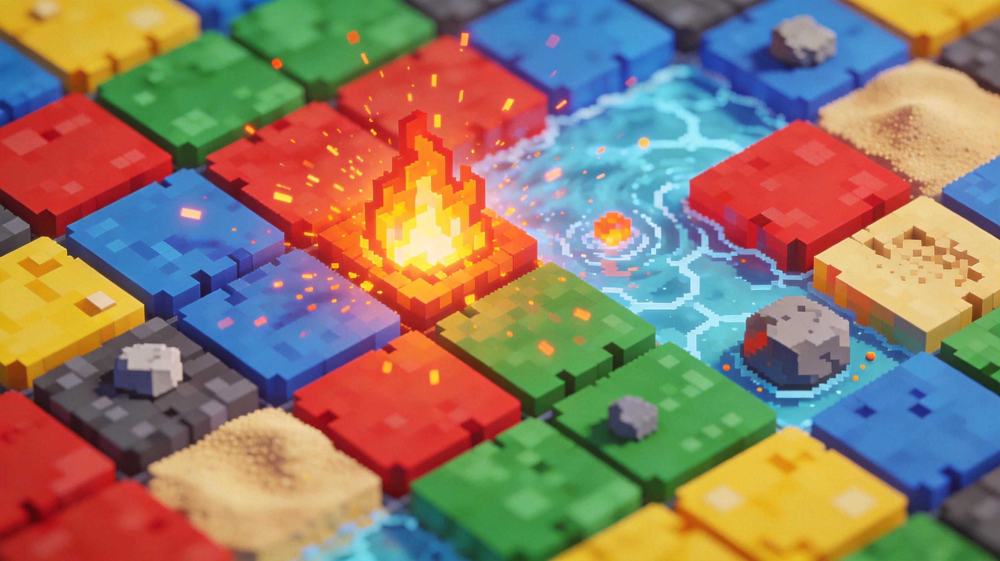
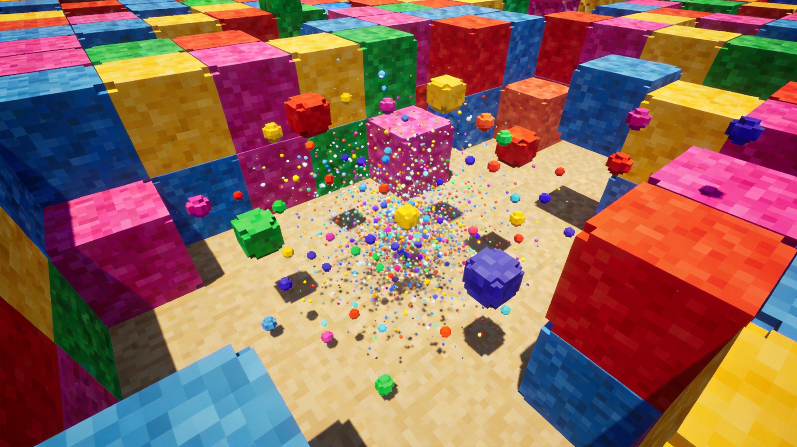
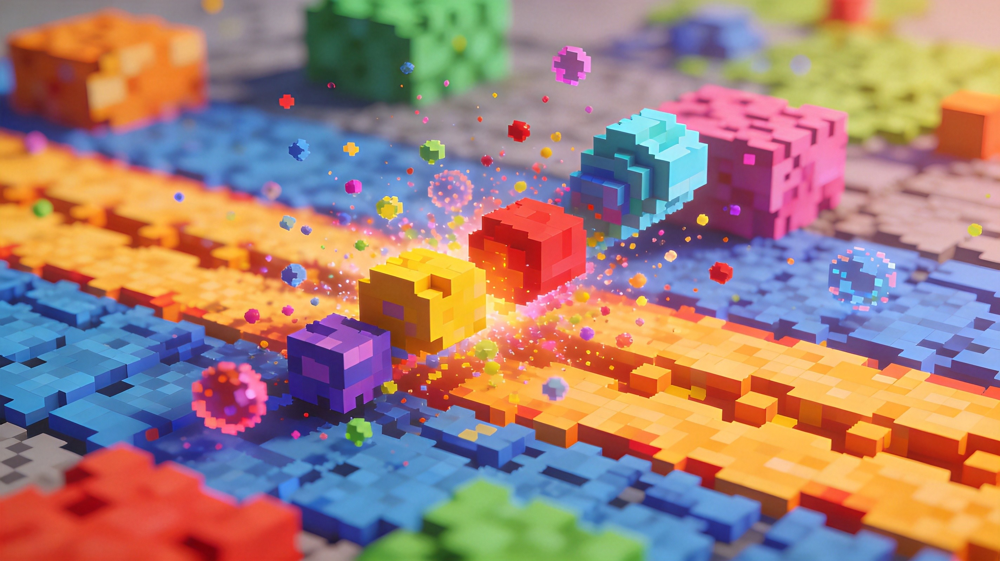

Sandboxels is a fascinating browser-based physics sandbox game where players can experiment with hundreds of different elements and watch how they interact. Whether you want to build elaborate machines, create life-like ecosystems, or just see what happens when you mix certain elements together, Sandboxels offers endless creative possibilities. This guide will walk you through everything from the basics to advanced combinations.
🎯 Getting Started

Accessing the Game
Sandboxels runs entirely in your browser at sandboxels.yeger.eu. There's no download required and no account needed to start experimenting. Just open the link and you'll see a grid canvas with an element palette on the side.
The Canvas
The main canvas is your playground. Each pixel on the canvas represents a single particle of whatever element you've selected. The simulation runs automatically, updating every frame to show how your elements interact with each other and their environment.
Drawing Elements
- Left click - Draw with the selected element
- Right click - Erase particles
- Scroll wheel - Change brush size
- Hold and drag - Draw multiple particles quickly
🔬 Essential Elements

Basic Elements
Start with these fundamental elements before moving to more complex combinations:
Water
Water is one of the most versatile elements. It flows, pools at the bottom, and interacts with almost everything. Use it to create rivers, oceans, or simply to cool down hot elements. Water evaporates when exposed to extreme heat.
Sand and Dust
These granular elements fall under gravity and pile up naturally. Sand is heavier than dust and settles faster. Both are great for creating terrain, beaches, or hourglass timers. They don't interact well with water long-term—sand eventually sinks to the bottom.
Fire
Fire rises, flickers, and eventually dies out. It can ignite flammable materials, turn water into steam, and melt certain substances. Be careful—fire spreads quickly and can destroy your creations if you're not careful.
Stone and Wall
These solid elements don't move or change. Use them to create boundaries, containers, or structural supports. Stone can be melted by extremely hot fires into magma, while wall remains permanent.
Some elements only appear after you've discovered them through specific combinations. Keep experimenting to unlock new materials!
⚗️ Element Combinations
Creating Steam
Place water near or above fire. The heat will transform water into steam, which rises upward. Steam can condense back into water when it cools down, creating a natural cycle. This is useful for building cloud chambers or rain makers.
Making Lava
Need some molten rock? Stack stone directly on top of each other and expose them to intense heat over time. Alternatively, heat stone in a contained space until it melts. Lava flows like water but is much hotter and destroys most elements it touches.
Growing Plants
Plants need water and a light source to grow. Draw some soil, add water nearby, and make sure there's light hitting the area. Over time, you'll see small sprouts emerge and grow toward the light. Plants can then spread their seeds to create more vegetation.
Building Ice
Cool water below freezing point by exposing it to very cold temperatures. You can achieve this by placing ice near water or using the "freeze" tool in certain modes. Ice is solid and can contain water temporarily.
Creating Life
This is where things get interesting. Life requires a very specific set of conditions: proper temperature, presence of water, oxygen, and usually soil. Create a contained environment with these elements and wait. Sometimes life emerges spontaneously—you'll see small organisms swimming or moving around.
Salt and Evaporation
When seawater is exposed to sufficient heat over time, it evaporates and leaves behind salt crystals. This process takes patience but demonstrates the game's realistic chemistry simulation.
🚀 Advanced Techniques

Temperature Management
Temperature plays a crucial role in Sandboxels. Different elements have different optimal temperature ranges. Learn to control temperature by using heating elements like fire and magma, or cooling elements like ice and winter. Thermoelectric materials can help distribute heat evenly.
Pressure Systems
Some elements react to pressure. Explosives become more volatile under pressure. Understanding pressure allows you to build pumps, compressors, and controlled explosion systems.
Electricity
Electrified elements can transfer charge through conductive materials like metals. Use batteries to generate electricity and wire to distribute it. Electricity can power lights, activate mechanisms, or create dramatic effects.
Creating Machines
With enough patience, you can build basic machines in Sandboxels. Gears, pistons, and conveyor systems allow you to create automated processes. Some players have built entire factories with moving parts that function continuously.
Ecosystem Building
For the ultimate challenge, try creating a self-sustaining ecosystem. Balance predators, prey, plants, and environmental conditions. Watch as your digital ecosystem evolves over time, with populations rising and falling naturally.
🎨 Creative Project Ideas
Volcano Simulation
Build a mountain with a magma chamber inside. Add water at the top and watch as it percolates down, heats up, and eventually erupts. This demonstrates heat transfer and pressure buildup in a satisfying way.
River and Dam System
Create terrain with valleys and construct a dam using sandbags or concrete. Add water upstream and watch how it pools. Then create a spillway to control the water flow—this teaches fluid dynamics principles.
Rain Cycle Chamber
Build an enclosed glass chamber. Fill the bottom with water and add a heat source. Watch as the water evaporates, rises, forms clouds at the top, and eventually rains back down. This creates a self-perpetuating weather system.
Cityscape
Use wall and stone to build buildings and roads. Add electricity networks with lights that turn on and off. Create parks with plants and fountains. Some players have built entire miniature cities with working infrastructure.
Biological Experiment
Create a petri dish environment with nutrients and organisms. Watch as bacteria grow, organisms multiply, and ecosystems develop. Some creatures even hunt others, creating predator-prey dynamics.
❓ Frequently Asked Questions
Is Sandboxels free to play?
Yes, Sandboxels is completely free and runs directly in your web browser. There's no premium content or in-game purchases.
How many elements are there?
Sandboxels features over 300 unique elements and materials. New elements can be discovered through experimentation or unlocked by finding specific combinations.
Can I save my creations?
Yes, you can save your simulations locally using the save function. You can also share specific setups with others through codes or links.
Why did my fire go out?
Fire needs fuel to burn and oxygen to sustain. If your fire dies, it might be surrounded by non-flammable materials or lacks continuous fuel supply.
How do I make living creatures?
Life is one of the most difficult things to create in Sandboxels. You need the right temperature (not too hot or cold), water, oxygen, and nutrients. Even with perfect conditions, life may take a long time to emerge—or might not appear at all. It's part of the challenge!
Can I control the simulation speed?
Yes, most versions include speed controls. You can pause the simulation entirely, run it at normal speed, or speed it up significantly for faster results.
The best way to learn Sandboxels is through experimentation. Don't be afraid to try wild combinations—you never know what might happen. Every great discovery started with curiosity!